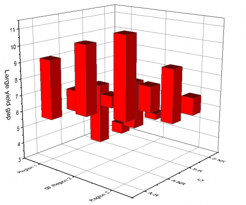

3D浮動棒グラフ
3D-Floating-Bar
- 
必要なデータ
- 少なくとも1つのZ列（あるいは、その部分領域）を選択します。Z列と関連するXY列がある場合、そのXY列が使われます。そうでない場合、ワークシートのデフォルトのXY値が使われます。
- または、
グラフ作成
行列シートをアクティブにするか必要なデータをワークシート上で選択します。
メニューからを選択します。
テンプレート
(Originのプログラムフォルダにインストールされています。)
Notes
- XYZデータの場合、同じX・Y座標にある2つのZ値が、棒の開始と終了として使用されます。行列データの場合、アクティブな行列シート内の2つのオブジェクトが棒の開始と終了として使用されます。1つめのZ値が2つめのZ値より大きい場合、棒の高さは Z1-Z2 になり、方向は上向きになります。1つめのZ値が2つめのZ値より小さい場合、棒の高さは Z2-Z1 になり、方向は下向きになります。
- 行列/ワークシートにマッピングされた関連するX値とY値により、各浮動棒のXY位置が決まります。
Note：3D浮動棒グラフでは、
- 基準面設定は存在しません。
- 棒の形状設定は使用できます。四角錐台と円錐台の場合、棒の最大長は全長とみなされます。
- 棒にラベルを追加し、ラベルの位置を設定する場合、下が開始位置、上が終了位置になります。
|